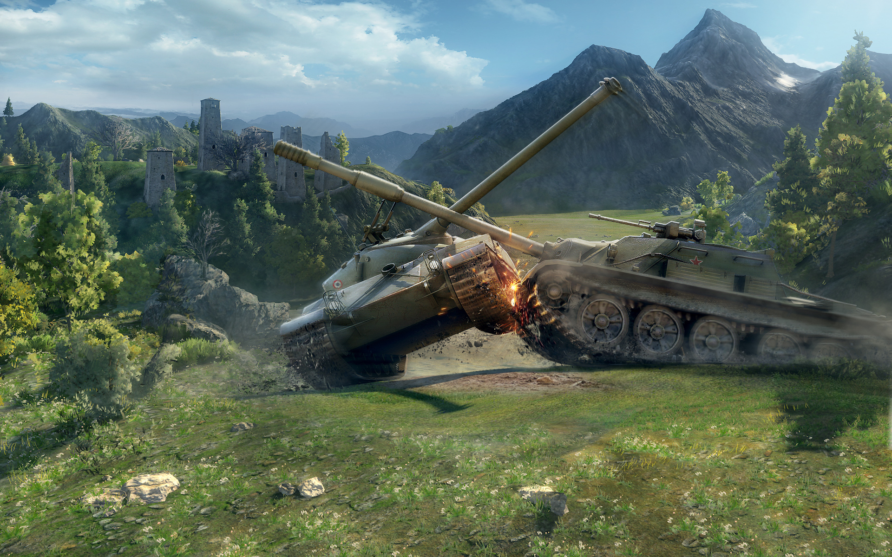
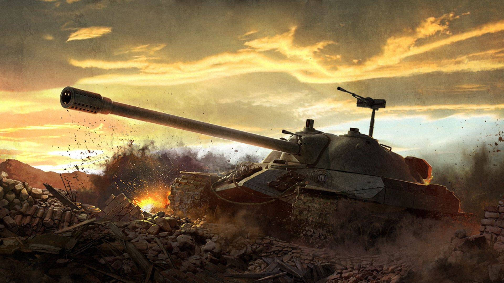

World of Tanks is een gratis te downloaden online spel waarmee gesimuleerde tankgevechten tussen spelers gevoerd kunnen worden. Het spel werd in Europa uitgegeven voor op Microsoft Windows op 12 april 2011. Later, op 12 februari 2014, werd het spel ook uitgegeven op de Xbox 360 onder de naam World of Tanks: Xbox 360 Edition.
Spelers kunnen door middel van spelen nieuwe onderdelen ontwikkelen en kopen, en zo betere tanks ontwikkelen. De tankmodellen komen voor het grootste deel uit de jaren 30 tot '60. Het spel wordt regelmatig bijgewerkt met nieuwe tanks, nieuwe speelvelden, betere graphics etc.
Het spel heeft momenteel vier spelvarianten: clanwars, waarin groepen (clans) spelers tegen elkaar strijden om territorium op een wereldkaart, de random battles (willekeurige gevechten), waarin twee teams worden gemaakt aan de hand van het niveau van de spelers en hun tanks, en tank company, waarin de spelers zelf een team mogen vormen dat ingedeeld gaat worden tegen een willekeurig ander team op een bepaald niveau. Sinds november 2013 is er ook een nieuwe spelvariant bijgekomen "teambattle" in deze spelvariant kunnen zelf gemaakte teams van 7 spelers tegen een ander team van 7 spelers tegen elkaar spelen. Vaak word dit door de clans gespeeld als oefening voor de clanwars. Ook is er een oefenmodus, waarin een groep spelers zelf een speelveld kan kiezen en teams kan indelen. Het nadeel van de oefenmodus is dat er geen speelgeld of ervaringspunten mee verdiend kunnen worden. In patch 9.2 is er ook een nieuwe spelmode toegevoegd: strongholds